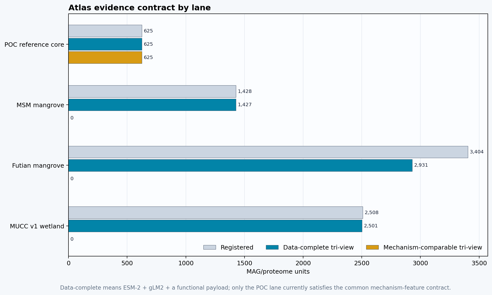
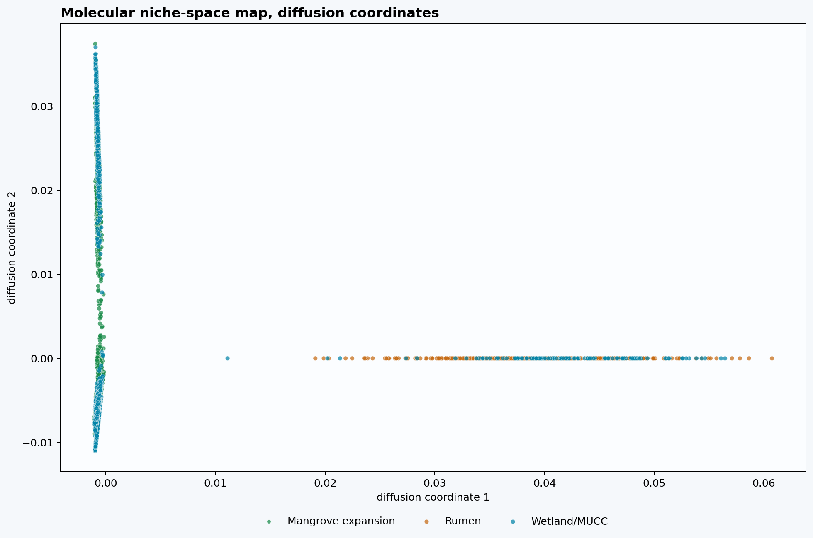
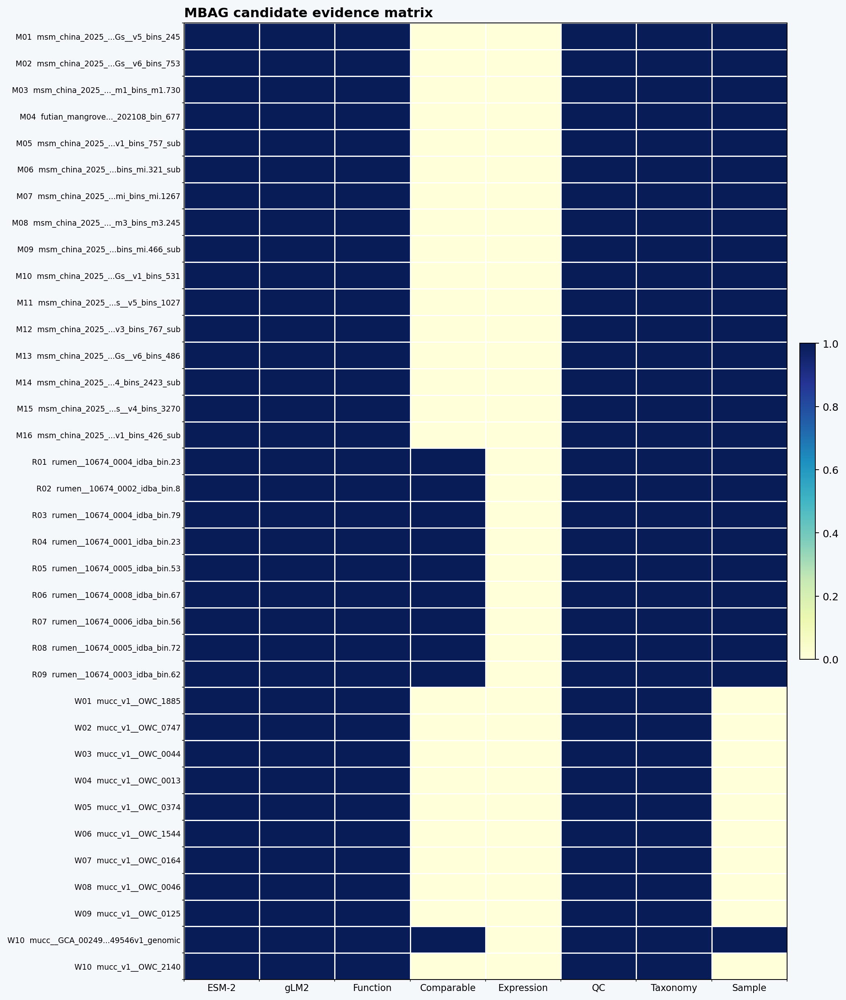

Executive Summary
The atlas has substantial and genuine coverage: 7,965 registered MAG/proteome rows, 7,710 ESM-2 embeddings, 7,717 gLM2 payloads, and 7,484 data-complete tri-views. The scientific correction in this release is that data completeness is not mechanism comparability. Only 625 POC units currently satisfy the common curated mechanism-feature contract.
The other completed functional views remain valuable but have different meanings. The 4,358 MSM/Futian mangrove tri-views contain real completed KOfam, MCycDB, SCycDB, METABOLIC, dbCAN/CAZy, MEROPS, Bakta, and QC outputs, but their current report-level methane/sulfur numerators are raw annotation-row aggregates and are not yet comparable to the POC feature contract. The 2,501 MUCC v1 tri-views combine source DRAM/gene annotations and processed expression detection; they are intentionally retained as a non-equivalent wetland source scaffold.
Accordingly, this release quarantines the former universal molecular-attestation ranking, the cross-lane marker-density plot, and any mechanism-strength comparison built from those fields. Mangrove candidates are now geometry-led review hypotheses with functional harmonization explicitly pending. ESM-2 neighborhoods remain useful for navigation, and MUCC expression remains useful orthogonal detection evidence, but neither establishes source-independent transfer, activity magnitude, methane flux, or a final MRV risk tier.
The strategic asset is therefore an auditable evidence warehouse and a disciplined route to stronger claims: rebuild one common accepted/present mechanism feature axis across all lanes; harmonize taxonomy and phylogeny-aware nulls; resolve gLM2 protocol comparability; connect MAGs to exact samples and abundance; and validate against environmental and flux/process observations. That is more scientifically credible—and more commercially durable—than preserving a visually compelling but provenance-driven ranking.
Scientific Reconciliation: What Survived, What Changed
The table below records the consequential findings from reconciling the current warehouse against the prior V9 ledger, raw per-MAG outputs, embedding protocols, taxonomy fields, MUCC expression tables, and staged ecological evidence. “Correction” does not mean the underlying runs were false; it means the report had promoted unlike feature contracts into one numerical interpretation.
| Audit class | Finding | Observed result | Report action |
|---|---|---|---|
| contract correction | Data-complete tri-view is not the same as mechanism-comparable tri-view. | 7,484 data-complete; 625 mechanism-comparable; 4,358 annotation-complete/harmonization-pending; 2,501 source-scaffold. | Use the four-state evidence contract everywhere; remove the former 4,980 canonical/mechanism-equivalent claim. |
| blocking defect | The former cross-lane methane density mixed incompatible numerators. | MSM/Futian used raw many-to-many annotation rows plus all HMM rows; POC used curated accepted/present features; MUCC used source DRAM terms. | Cross-lane methane/sulfur/substrate densities and the universal attestation ranking are quarantined. Raw annotation counts remain only as provenance diagnostics until the common accepted/present feature rebuild is complete. |
| ranking impact | The quarantined score was materially coupled to pipeline-specific methane counts. | Pearson r=0.605; 99.4% of the legacy top 500 were mangrove rows. | Mangrove candidates are now selected by geometry and QC only, with no cross-lane mechanism rank. |
| geometry boundary | ESM-2 supports target-target neighborhood navigation, not rumen transfer. | Raw reciprocal unique pairs: 15,727 mangrove↔wetland, 1 rumen↔wetland, 0 mangrove↔rumen. After dimension z-scoring: 15,064, 0, 0, respectively. | Describe ESM-2 links as latent neighborhoods; forbid source-independent ecological or mechanism transfer claims. |
| confounding | Bridge taxonomy is structured and GTDB release is source-confounded. | 79.2% of usable reciprocal mangrove↔wetland pairs match phylum after conservative synonym normalization; release metadata is absent outside POC. | Treat bridge continuity as partly taxonomic homophily and require harmonized taxonomy/phylogeny-aware nulls. |
| orthogonal evidence | MUCC expression and field-observation lanes are valuable but not yet joined. | 1,358 MAGs have processed methane-gene detection and 1,868 sulfur; exact sample-environment-flux links=0/133. | Surface expression as detection/occupancy support and staged flux as a validation lane; do not infer activity magnitude or flux. |
Interpretation hierarchy: (1) payload availability, (2) within-protocol exploratory signal, (3) cross-lane mechanism comparability, and (4) sample/ecological validation. A unit may pass an earlier level without passing the later ones.
Download the machine-readable audit: scientific audit JSON, evidence-contract summary, reconciliation findings, functional-metric provenance, validation gates, and claim-boundary matrix.
Formal Tri-View Evidence Contract
A formal tri-view row has three payloads—ESM-2, gLM2, and function—but the evidence state also records whether those payloads support a common quantitative interpretation. This distinction is now encoded at row level, in the freeze manifest, in the candidate cards, and in release validation gates.
| Lane | Registered | ESM-2 | gLM2 | Functional payload | Data-complete tri-view | Mechanism-comparable tri-view | Functional contract |
|---|---|---|---|---|---|---|---|
| POC reference core | 625 | 625 | 625 | 625 | 625 | 625 | Curated accepted/present mechanism features (comparable) |
| MSM mangrove | 1,428 | 1,428 | 1,428 | 1,427 | 1,427 | 0 | Annotation-complete; common feature aggregation pending |
| Futian mangrove | 3,404 | 3,156 | 3,156 | 2,931 | 2,931 | 0 | Annotation-complete; common feature aggregation pending |
| MUCC v1 wetland | 2,508 | 2,501 | 2,508 | 2,508 | 2,501 | 0 | DRAM/gene/expression source scaffold (non-equivalent) |
Static fallback

gLM2 is also protocol-stratified: 5,209 units use one native plus one shuffled window, whereas 2,508 MUCC units use 10 native plus 10 shuffled windows. The model family/revision is shared, but the resulting summary metrics are compared only within protocol class. ESM-2 uses the same 650M model family and a 6,000-protein cap; 121 rows are explicitly flagged as capped.
Source Provenance And Environmental Readiness
Environmental metadata now makes MBAG provenance-aware, not sample-scoreable. The report can explain where each evidence lane comes from and how close it is to sample/site rollup, but it cannot yet convert MAG-level molecular potential into final environmental methane-risk scores. That distinction is strategically valuable: it tells partners what is already auditable and tells the team exactly what metadata gaps must close next.
| Evidence lane | Report units | Metadata universe | Primary source | Resolution now | Use now | Blocking gap |
|---|---|---|---|---|---|---|
| Rumen reference | 518 | 555 embedded POC rumen proteomes | Stewart et al. 2019; ENA PRJEB31266 | 555/555 exact ERZ analysis-accession matches | Methane-domain reference provenance and source-aware bridge comparison | Animal/sample-level environmental metadata is mostly cohort-level; not blue-carbon sample context |
| Wetland/MUCC target | 107 | 107 embedded wetland/MUCC Methanoregula proteomes | Bechtold et al. 2025; MUCC v2.0.0 Zenodo 10.5281/zenodo.14532347 | 20 exact NCBI assembly/BioSample; 23 OWC bin plus site/project; 64 source-bucket rows | Target-domain provenance, wetland source-bucket context, and metadata-readiness triage | Uniform MAG-to-sample BioSample mapping for JGI/PPR/STM/source-bucket rows |
| Mangrove/Futian target | 3,404 | 3,404 phase-1 rMAGs; 3,156 ready payload rows; 248 explicit gap rows | Qi et al. 2026; Figshare 10.6084/m9.figshare.30883646.v3 | 2,931/3,404 tri-view units in the current functional snapshot; 65 exact sediment sample metadata rows | Interim mangrove/mudflat molecular niche expansion and time/depth/habitat readiness design | Bacteria functional completion, depth-resolved MAG-to-sample assignment, abundance/read coverage, and flux/process validation |
| Mangrove/MSM target | 1,428 | 1,428 local MAG candidates; source paper reports 966 final MAGs | Pan et al. 2025; GigaDB 10.5524/102702; NCBI PRJNA1150796 | 1,427/1,428 tri-view units; 82 sediment sample rows; 71 exact BioSample rows | Target-domain molecular screening and sample-readiness prioritization | MAG-to-sample assignment and 966-vs-1428 denominator reconciliation before sample/site rollups |
| MUCC v1 Old Woman Creek wetland reference | 2,508 | 2,508 checksum-validated archive MAGs; 2,502 meet the paper-defined HQ/MQ screen; 7 lack direct source protein payload | Borton et al. 2026, 10.1128/msystems.00680-25; Zenodo 10.5281/zenodo.8194033 | 2,501/2,508 data-complete source-scaffold tri-views; processed expression supports 1,948 MAGs across 133 source sample columns; 275 chamber-flux, 5,280 porewater, and 29,280 tower-flux rows are staged | Wetland molecular-reference screening and source-aware candidate review; not canonical mechanism comparison | Canonical MethaNet curated mechanism annotations and an authoritative sample/date/depth/environment/flux crosswalk: exact ecological validation joins remain 0/133; expression normalization units also remain unresolved |
Denominator note: the POC crosswalk covers a broader 662-proteome context, while this report renders 625 MAG/bin-comparable POC units plus all registered mangrove and MUCC v1 wetland lane rows. The embedding map contains 7,710 registered ESM-2-bearing units. Pending, source-gap, mixed-resolution, or non-sample-linkable rows remain visible as readiness states rather than being treated as biological absence.
Three Molecular Views, Explicitly Stratified
The MethaNet Bridge Attestation Graph organizes molecular similarity into a reviewable evidence trail. A 2D embedding bridge can be a useful discovery signal, but it is not a mechanism. Each view therefore carries its own protocol, eligible comparison set, and blocking gaps.
The public report now exposes evidence availability, protocol class, numerator provenance, and allowed claim wording. A universal cross-lane mechanism score remains withheld until the common feature contract is rebuilt and validated.
ESM-2 Geometry: Useful Signal, Measured Limitations
ESM-2 defines a high-dimensional proteome-neighborhood surface for 7,710 units. The current raw cosine space is strongly anisotropic: random-pair cosine has mean 0.9912 and median 0.9936; median similarity to the global centroid is 0.9969. Raw cross-domain kNN edges therefore occupy a highly saturated range (median 0.999486). Absolute cosine magnitude is not used as mechanism evidence.
The graph nevertheless contains a reproducible target-target pattern. In raw space there are 15,727 unique reciprocal mangrove↔wetland pairs, 1 rumen↔wetland pair, and 0 rumen↔mangrove pairs. After per-dimension z-scoring, 15,064 mangrove↔wetland reciprocal pairs remain, while both rumen transfer categories fall to zero. The defensible finding is target-domain neighborhood continuity—not source-independent rumen transfer.
Taxonomy explains an important fraction of that continuity. Among reciprocal mangrove↔wetland pairs with usable phylum labels, 60.7% are exact raw-name matches and 79.2% match after conservative synonym normalization. Because GTDB release metadata is recorded only for the POC lane, source and taxonomy-release effects are confounded. Harmonized taxonomy and phylogeny-aware source nulls are required before interpreting neighborhood enrichment as functional convergence.
Diffusion coordinates are the primary navigation view because they are built from the same neighborhood graph used for inspection. UMAP, t-SNE, and PCA remain sensitivity views; no projection is treated as proof.
Scientific anchors: ESM-2 protein language model · medium-sized protein language models for transfer learning · dimension-reduction evaluation principles · Diffusion maps · PHATE for biological manifolds · similarity network fusion · graph ML for integrated multi-omics · UMAP documentation · Old Woman Creek wetland microbiome study · MUCC v1 source dataset. Recent dimensionality-reduction benchmarks reinforce the design choice: visual methods differ in local and global preservation, so the report exposes the high-dimensional kNN substrate and candidate evidence cards rather than letting a single projection carry the claim.
Molecular Niche-Space Bridge Map
The bridge map is a navigation layer, not the final decision rule. It displays every embedding-bearing MAG/proteome unit in the release payload and overlays auditable high-dimensional evidence links from the original 1,280-dimensional ESM-2 space. Rows that lack embeddings, such as source-lane gap records, remain in the status tables instead of being forced onto the manifold.
Gold links connect selected case-study candidates to their nearest POC reference neighbor. Gray and teal links show cross-domain kNN evidence from the ESM-2 neighborhood graph. Points are colored by source ecosystem; size indicates only whether a functional payload is present. The former score-based size encoding has been removed. Click a halo to inspect the row's evidence contract, gLM2 protocol, numerator provenance, QC, taxonomy, expression detection, and claim boundary.
Static fallback

Candidate Cards As Evidence-Eligibility Objects
The candidate layer now answers a narrower and more useful question: which evidence exists for each review hypothesis, and which comparisons are authorized? POC cards retain their historical internal bridge ordering. Mangrove cards are selected by ESM-2 neighborhood geometry and QC—not by the quarantined functional score. MUCC cards remain source-scaffold review objects with processed expression detection where present.
The matrix and wheel show evidence availability or contract eligibility: ESM-2, gLM2, functional payload, common mechanism contract, expression, QC, taxonomy, and sample context. A filled cell means the evidence is present or eligible; it does not mean the mechanism is strong, active, or causally linked to flux.
Candidate evidence-eligibility matrix
Rows are review cards; columns are binary evidence availability or comparability gates. The source-colored strip separates POC, mangrove, and MUCC review objects.
Evidence coverage wheel
Each ring is a candidate group; longer arcs mean a larger share of selected cards has that evidence or eligibility state—not stronger biology.
Static fallback

Functional Metric Provenance And Quarantine
The prior report labeled a lane-dependent row aggregate as “methane marker density per 1,000 proteins.” That label was valid only for the curated POC feature contract. In MSM/Futian, the numerator combined raw MCycDB hit rows with every METABOLIC HMM output row; many proteins can contribute multiple hit rows, so the ratio can exceed one without representing more than one marker gene per protein. MUCC uses a third source-term contract.
| Lane | Functional units | Numerator provenance | Median raw methane rows | Median proteins | Raw rows/protein >1 | Public status |
|---|---|---|---|---|---|---|
| Futian mangrove | 2,931 | Raw many-to-many annotation-hit rows plus all HMM rows | 3,757.0 | 2,431.0 | 94.2% | Quarantined: raw hit-row numerator is not a marker density |
| MSM mangrove | 1,427 | Raw many-to-many annotation-hit rows plus all HMM rows | 4,072.0 | 2,886.0 | 93.1% | Quarantined: raw hit-row numerator is not a marker density |
| MUCC v1 wetland | 2,508 | Source DRAM term rows plus processed expression detection | 18.0 | 2,568.0 | 0.0% | Source-scaffold term density; not cross-lane equivalent |
| POC reference core | 625 | Curated accepted/present mechanism features | 2.0 | 1,945.0 | 0.0% | Comparable curated-feature density within the POC contract |
The contaminated methane component correlated with the former combined index at Pearson r=0.605; 99.4% of the former top 500 were mangrove rows. This is sufficient to quarantine the universal ranking. Raw counts remain in the downloadable audit table under explicitly named provenance fields; public mechanism densities and cross-lane ranks are null outside the POC contract.
MUCC v1: Orthogonal Expression Evidence, Ecological Join Still Blocked
The Old Woman Creek lane is strategically important because it adds a different evidence axis: processed metatranscriptome detection across 133 source sample columns. Expression support is present for 1,948 MAGs; 1,358 have at least one processed methane-associated expressed-gene row and 1,868 have sulfur-associated rows. These are detection/occupancy signals from the deposited processed tables; unresolved normalization units prevent activity-magnitude comparisons.
The warehouse also stages 275 chamber-flux rows (188 source-valid), 5,280 porewater rows (1,563 source-valid), and 29,280 half-hourly gap-filled tower rows. It includes 694 exploratory FlashWeave associations, of which 126 pass the current stability filter, plus 3 non-grey descriptive WGCNA modules.
The decisive limitation is linkage: 0/133 sequencing samples currently have an authoritative exact sample-depth-environment-flux join, and all 133 remain blocked for ecological validation. Flux records are therefore staged validation context—not evidence that a given MAG, expression signature, or network edge caused measured methane flux.
Sample-Linkage Readiness: Where MAG Signals Can Start Rolling Up
This panel converts MAG/proteome evidence into the strongest defensible environmental context available today. Futian rows are grouped by site-month context with chemistry metadata available at multiple depth samples; MSM rows are grouped by source sample/BioSample sets. The dark bar overlay marks how much of each context already has all three molecular views: ESM-2, gLM2, and functional annotations.
The new information is operational rather than crediting-oriented: it shows which contexts are most ready for abundance mapping, metadata reconciliation, and field validation. It does not rank samples by methane risk, because per-MAG abundance, exact sample assignment, environmental permissiveness, and flux/process validation are still required.
From MAG Fingerprints To Environmental Methane-Risk Scoring
The atlas becomes operationally stronger when validated MAG/proteome features can be rolled up to physical samples, metagenomes, sites, and monitoring periods. Today, only the POC lane has mechanism-comparable methane/sulfur/substrate feature primitives. MSM/Futian have completed annotations awaiting a common feature rebuild, while MUCC contributes source-scaffold and expression-detection evidence. Environmental methane-risk scoring begins only after comparable molecular features are weighted by abundance, connected to exact sample provenance, and interpreted alongside measured or carefully tiered environmental covariates.

Graphical abstract. MethaNet's current evidence layer operates at MAG/proteome grain: ESM-2 and gLM2 context, methane/sulfur/substrate annotations, QC, taxonomy, and provenance define molecular fingerprints for bridge-candidate review. The next product layer links those fingerprints to physical samples or metagenomes, weights them by MAG/read abundance and unbinned marker evidence, adds environmental permissiveness covariates, uncertainty, and flux/process validation status, then emits sample risk readiness labels such as not_scoreable, needs_metadata, needs_abundance, needs_environment, needs_flux_validation, monitor_more, or scoreable_provisional when evidence is sufficient. This is an evidence-to-readiness workflow for monitoring and validation design, not a final MRV risk score, measured methane-flux result, A-E risk tier, or carbon-credit approval.
A defensible sample score should therefore combine four gated layers. First, the molecular layer uses one common, validated mechanism-feature contract across MAGs and unbinned marker evidence. Second, the community layer weights those features by read coverage, relative or absolute abundance, pathway redundancy, and unassembled/unbinned signal. Third, the environmental layer captures permissiveness—salinity, sulfate, redox or oxygen proxies, pH, temperature, organic carbon, depth, vegetation, hydrology, season, and management. Fourth, the validation layer anchors predictions against chamber fluxes, dissolved methane, porewater chemistry, incubations, or repeated field observations with explicit temporal and spatial joins.
1. Link molecules to samples
Resolve MAG-to-sample and MAG-to-site provenance, keep resolution tiers, and preserve unlinked MAGs as not scoreable rather than forcing a risk estimate.
2. Weight by community abundance
Turn genome potential into sample capacity using MAG coverage, marker abundance, unbinned functional reads, and uncertainty from incomplete assembly.
3. Add environmental permissiveness
Use measured metadata first, modeled covariates second, and mark every salinity, sulfate, redox, substrate, depth, and vegetation field by evidence tier.
4. Calibrate with field evidence
Use flux, porewater, geochemistry, and temporal resampling to learn which molecular signatures predict methane risk under real blue-carbon conditions.
This is why field work is not a downstream formality; it is the learning engine that turns MBAG from a molecular atlas into a progressively stronger risk system. Dense sampling across mangroves, salt marshes, freshwater wetlands, restored sites, degraded sites, salinity gradients, depth profiles, seasons, and management regimes will expand the molecular niche map, expose source-specific blind spots, and calibrate which bridge signatures matter in blue-carbon settings. Every new sample can strengthen the atlas if it arrives with clean provenance, abundance, environmental measurements, and a validation target.
The immediate product interpretation is a sample risk readiness layer, not a final A-E risk tier. A sample can be labeled scoreable, monitor more, needs metadata, needs abundance, needs environmental covariates, or needs flux validation. That language is honest, useful for partners, and strategically powerful: it converts MethaNet's current molecular evidence into a concrete sampling and diligence plan while building the evidence base needed for future calibrated methane-risk scoring.
Strategic Readout: A Stronger Asset Because The Boundaries Are Enforced
The durable achievement is a queryable, provenance-rich warehouse spanning 7,965 registered units and multiple independent evidence lanes. It can already support payload auditing, latent-neighborhood exploration, protocol-aware candidate review, expression-detection queries, metadata-gap prioritization, and validation-study design. Those capabilities survive this reconciliation.
What changed is the level of authorized inference. MethaNet cannot yet claim one fully harmonized mechanism space across all 7,484 data-complete tri-views. It can claim a 625-unit mechanism-comparable POC core, a 4,358-unit annotation-complete expansion awaiting common feature aggregation, and a 2,501-unit MUCC source scaffold with substantial processed expression evidence. Keeping those states separate makes future improvements measurable and protects downstream partner decisions from pipeline artifacts.
The highest-value next build is now unambiguous: produce one lane-independent mechanism-feature table; harmonize taxonomy and phylogeny-aware nulls; standardize or explicitly calibrate gLM2 protocols; map comparable MAG features and expression to exact samples and abundance; and validate against field/process observations with uncertainty. Once those gates pass, MethaNet can responsibly reintroduce cross-lane mechanism ranking and begin calibrated sample-risk modeling.